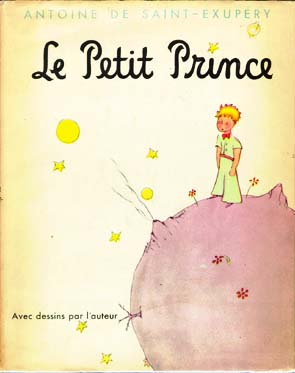

О нашем магазине
Адрес:

Наш офис находится по адресу: улица Профессора Попова, 5.
Всезнайка
Заказывайте книги одним кликом!
Маленький принц
Год издания: 1942
Автор(ы): Антуан де Сент-Экзюпери
Жанр(ы): Детская литература, классика, сказка
Подробное описание:
В одном из писем к матери Сент-Экзюпери признался: “Мне ненавистны люди, пишущие ради забавы, ищущие эффектов. Надо иметь что сказать”. Ему, романтику неба, не чуравшемуся земных радостей, любившему, по свидетельству друзей, “писать, говорить, петь, играть, докапываться до сути вещей, есть, обращать на себя внимание, ухаживать за женщинами”, человеку проницательного ума со своими достоинствами и недостатками, но всегда стоявшему на защите общечеловеческих ценностей, было “что сказать”. И он это сделал: написал сказку “Маленький принц”, о самом важном в этой жизни, жизни на планете Земля, все чаще такой неласковой, но любимой и единственной.
Цитата из произведения:
Взрослые посоветовали мне не рисовать змей ни снаружи, ни изнутри, а побольше интересоваться географией, историей, арифметикой и правописанием. Вот как случилось, что шести лет я отказался от блестящей карьеры художника. Потерпев неудачу с рисунками №1 и №2, я утратил веру в себя. Взрослые никогда ничего не понимают сами, а для детей очень утомительно без конца им все объяснять и растолковывать.
Итак, мне пришлось выбирать другую профессию, и я выучился на летчика. Облетел я чуть ли не весь свет. И география, по правде сказать, мне очень пригодилась. Я умел с первого взгляда отличить Китай от Аризоны. Это очень полезно, если ночью собьешься с пути.
На своем веку я много встречал разных серьезных людей. Я долго жил среди взрослых. Я видел их совсем близко. И от этого, признаться, не стал думать о них лучше.